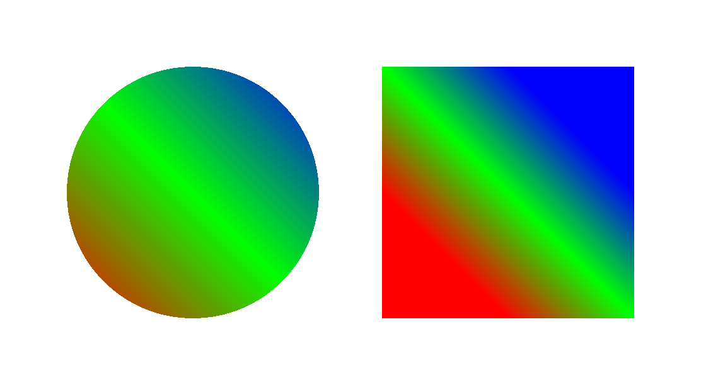

|
superclass: object% |
A linear gradient is used with a brush% to fill
areas with smooth color transitions.
Color transitions are based on a line, where colors are assigned to
stop points along the line, and colors for in-between points are
interpolated from the stop-point colors. The color of a point on the
gradient’s line is propagated to all points in the drawing context
that are touched by a line through the point and perpendicular to the
gradient’s line.
构造函数
(new linear-gradient% [x0 x0] [y0 y0] [x1 x1] [y1 y1] [stops stops]) → (is-a?/c linear-gradient%) x0 : real? y0 : real? x1 : real? y1 : real? stops : (listof (list/c (real-in 0 1) (is-a?/c color%)))
Creates a linear gradient with a line from (x0, y0)
to end point (x1, y1). The stops list
assigns colors to stop points along the line, where 0.0
corresponds to (x0, y0), 1.0 corresponds to
(x1, y2), and numbers in between correspond to
points in between.
Elements in stops are implicitly sorted by point (i.e., by the number between 0.0 and 1.0). Order is preserved for multiple elements for the same point, in which case the first element for a given point is treated infinitesimally before the point, and additional elements between the first and last for a stop point are effectively ignored.
例如：
> (define ellipse-brush (new brush% [gradient (new linear-gradient% [x0 0] [y0 200] [x1 200] [y1 0] [stops (list (list 0 (make-object color% 255 0 0)) (list 0.5 (make-object color% 0 255 0)) (list 1 (make-object color% 0 0 255)))])]))
> (define rectangle-brush (new brush% [gradient (new linear-gradient% [x0 0] [y0 100] [x1 100] [y1 0] [stops (list (list 0 (make-object color% 255 0 0)) (list 0.5 (make-object color% 0 255 0)) (list 1 (make-object color% 0 0 255)))])]))
> (dc (λ (dc dx dy) (define old-pen (send dc get-pen)) (define old-brush (send dc get-brush)) (define-values (ox oy) (send dc get-origin)) (send dc set-pen "black" 1 'transparent) (send dc set-brush ellipse-brush) (send dc set-origin (+ ox dx 50) (+ oy dy 50)) (send dc draw-ellipse 0 0 200 200) (send dc set-brush rectangle-brush) (send dc set-origin (+ ox dx 300) (+ oy dy 50)) (send dc draw-rectangle 0 0 200 200) (send dc set-pen old-pen) (send dc set-brush old-brush) (send dc set-origin ox oy)) 550 300) 
Returns the gradient’s control line as x0, y0,
x1, and y1.
Returns the gradient’s list of color stops.